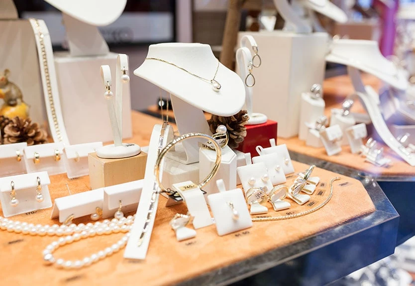

Persoonlijk advies
Wij nemen de tijd om uw wensen te begrijpen, vrijblijvend en met een kopje koffie erbij.

Van unieke sieraden en trouwringen tot reparaties, maatwerk en horloges. Al generaties lang een vertrouwd begrip in Purmerend.
Wij nemen de tijd om uw wensen te begrijpen, vrijblijvend en met een kopje koffie erbij.
Reparaties en maatwerk worden uitgevoerd door ervaren vakmensen, gewoon bij ons in de zaak.
Een begrip in Purmerend sinds 1972, van generatie op generatie.
Alles onder één dak: van het mooiste sieraad tot de kleinste reparatie.

Het symbool van jullie verhaal. Persoonlijk uitgezocht of speciaal voor jullie ontworpen.

Voor het moment dat alles verandert.

Met zorg samengestelde, onderscheidende collecties.

Tijdloze horloges voor elke gelegenheid.

Goud, zilver, horloges en klokken, hersteld in eigen atelier.

Van schets tot uniek sieraad met een eigen verhaal.
Een nieuwe generatie sieraden. Duurzaam vervaardigd uit 18 karaat gerecycled goud en lab-grown diamanten.

"Dankzij de vakmensen die mijn ring hebben vermaakt, heb ik nu een uniek sieraad dat perfect aansluit bij wie ik ben. Het resultaat overtrof al mijn verwachtingen."Yvonne Blokdijk
"Super vriendelijke en professionele service. Je merkt dat ze veel kennis en ervaring hebben. Eerlijk gezegd de beste juwelier van de stad."Ayoub Jamil
"Zeer professioneel en klantvriendelijk geholpen. We zijn uitstekend geadviseerd en komen hier zeker terug."Johan Plemper

Vakmanschap, vertrouwen en persoonlijke aandacht staan bij ons al meer dan 50 jaar centraal.

U bent altijd welkom voor advies, een reparatie of gewoon om rond te kijken.